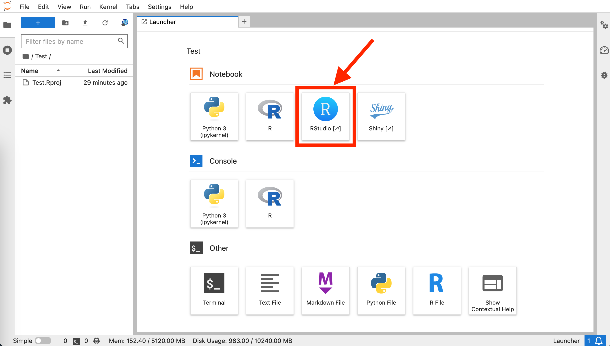
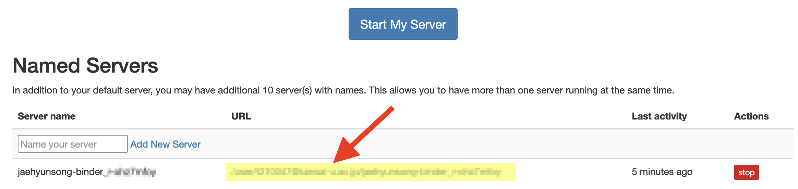

[1] "C:\\Users\\ユーザー名\\AppData\\Local/R/win-library/4.2"2 Rのインストール
- 矢内による資料 (macOS編、Linux (Ubuntu)編、Windows編)
2.1 自分のPCにインストール
Rのバージョン、使用するOSのバージョンによってインストール方法が変更される可能性がある。したがって、最新情報はネット上の解説記事等を参照されたい。以下の内容はmacOS 13（Ventura）、Ubuntu 22 LTS（Jammy）、Windows 11にR 4.3.0をインストールする方法である。Rのインストールが終わったら、統合開発環境（IDE）であるRStudioのインストールを推奨する。RStudioのインストール方法は第3章を参照すること。
2.1.1 macOS
2.1.1.1 Step 1: Xcodeのインストール
macOSのApp Storeを起動し、「Xcode」と検索する。検索結果画面のXcodeの「入手（英語版はGET）」をクリックする。Xcodeはかなりサイズが大きいため、時間に余裕を持って実行すること（1時間以上かかる場合もある）。
2.1.1.2 Step 2: Command Line Toolsのインストール
macOSのターミナル（terminal）を起動し、以下のように入力する（前の$は入力しない）。
$ xcode-select --install後は画面の案内に従って、操作するだけだ。
2.1.1.3 Step 3: Xquartzのインストール
Xquartzの公式ホームページへアクセスし、インストーラーをダウンロードする必要がある。公式ホームページはGoogle等で「xquartz」と検索すれば最上段にヒットする。ホームページの最初のページからインストーラーのファイル名をクリックするとダウンロードできる。あとはダウンロードしたファイルを開き、指示通りに操作すれば良い。
2.1.1.4 Step 4: Rのインストール
Rの公式レポジトリであるCRANにアクセスし、画面上段の「Download R for macOS」をクリックする。インストーラーが2種類あるため、自分のPCに合ったものをダウンロードする必要がある。自分のPCのCPUがApple Silicon M1かM2であれば、「For Apple silicon Macs:」のファイルを、Intel製であれば「For older Intel Macs:」のファイルをダウンロードする。
自分のPCのCPUを確認する方法は、macOSの左上のりんごボタンをクリックし、「このMacについて（About This Mac）」をクリックすると、自分のPC情報が表示される。ここで「チップ」項目を確認し、「M1」か「M2」であればApple Siliconであり、Intelという文字が含まれていればIntel製のCPUである（たとえば、「3.8 GHz 8-Core Intel Core i7」）。
ダウンロードしたインストーラーを開き、指示通りに操作するとRはインストールは完了だ。
2.1.2 Windows
2.1.2.1 Step 1: Rのインストール
Rの公式レポジトリであるCRANにアクセスし、画面上段の「Download R for Windows」をクリックする。続いて、「base」をクリックする。最後に次の画面で「Download R-4.3.1 for Windows」をクリックしてインストーラーをダウンロードする。「4.3.1」の箇所は最新バージョンの値であり、新しいバージョンがリリースされると、ここの数字も変わる。
ダウンロードが完了したらインストーラーを開き、指示通りに操作する。基本的に「はい」、「次へ」だけで問題ない。
2.1.2.2 Step 2: Rtoolsのインストール
の公式レポジトリであるCRANにアクセスし、画面上段の「Download R for Windows」をクリックする。続いて、「Rtools」をクリックする。いくつかのRtoolsが表示されるが、ここでは自分が使用するRのバージョンに合ったものを選択する。たとえば、インストールしたRのバージョンが4.3.Xなら「RTools 4.3」を、4.1.3なら「RTools 4.0」を選択する。右側に対応するRバージョンが表示されるので参照すること。
続いてRtoolsのインストーラーをダウンロードする。ただし、インストーラーのリンクが画面の最上段に位置しないことに注意されたい。ページの真ん中辺りに「Rtools43 installer」というリンクがあるが、これをクリックするとインストーラーがダウンロードされる。ここでも「43」はRtoolsのバージョンに応じて数字が異なる。
ダウンロードが完了したらインストーラーを開き、指示通りに操作する。基本的に「はい」、「次へ」だけで問題ない。
2.1.2.3 Step 3: ユーザー名を確認する
今は日本語のユーザー名でもRインストールの問題はないと考えられるが、パッケージのインストールができない場合がある。パッケージのインストール先に英数字以外の文字が含まれている場合は、インストール先を変更する方が良いだろう。そのためには、パッケージのインストール先を調べる必要がある。Rを起動し、以下のコマンドを入力する。
Sys.getenv("R_LIBS_USER")Rのバージョンによって、最後の数字が変わるが問題ない。重要なのはここの「ユーザー名」に英数字以外の文字が含まれているかどうかだ。ここに日本語などが使われている場合は、パッケージがインストールできなくなる可能性がある。この場合の解決方法を紹介する。もし、パスに日本語や韓国語、中国語が含まれていない場合はStep 3は読み飛ばそう。
まず、画面下段の検索画面から「環境変数」と入力し、「環境変数を編集」をクリックする。
ウィンドウの真ん中辺りにある「新規（N）…」をクリックする。
「変数名（N）：」には「R_LIBS_USER」を入力し（スペルミスに注意）、「変数値（V）：」には英数字のみで構成されたパスを入力する（「_」などの記号は使える）。ここではCドライブ直下の「r_packages」というフォルダーを指定した。まだ作っていないフォルダーではあるが、今後、自動的に生成される。入力後、OKをクリックする。
画面上段の「〜のユーザー環境変数（U）」に「R_LIBS_USER」項目が追加されていれば、OKを選択する。

Rを再起動し、もう一度Sys.getenv("R_LIBS_USER")を実行してみる。先ほど指定したパスが表示されれば成功だ。今後、新しいRパッケージはここで指定したフォルダーに保存されるようになる。
Sys.getenv("R_LIBS_USER")[1] "C:\\r_packages\\"2.1.3 Ubuntu
以下の内容はDebian系LinuxディストリビューションであるUbuntuをベースとした解説である。他のDebian系やその他のLinux（Redhat系、Arch系）についてはCRAN公式ページを参照されたい。
2.1.3.1 Step 1: インストールの準備
これから様々なパッケージをインストールしていくが、その前にgdebiとwgetをインストールしておく必要がある。gdebiは.deb形式のソフトウェア、ライブラリをインストールするためのパッケージであり、wgetはインターネット上のファイルをダウンロードするためのパッケージだ。ただ、Linuxをそこそこ使っている読者であれば、この2つはインストール済みである可能性が高く、そもそも多くのDebian系ディストリビューションでは最初から導入済みである。もし、インストールされているかどうか不安な場合はターミナル（terminal; 「端末」とも訳される場合がある）を開き、以下のように入力する（最初の$は入力しない）。最初はパスワード入力が求められる。
$ sudo apt update
$ sudo apt install -y gdebi-core wget2.1.3.2 Step 2: 日本語フォントのインストール
引き続き、作図に使用する日本語フォントをインストールする。好きなフォントを入れても良いが、ここではIPAexフォントを導入する。ターミナルから以下のコマンドを入力し、IPAexフォントをインストールする。
$ sudo apt install -y fonts-ipaexfont続いて、以下のコマンドでフォントのキャッシュファイルを更新する。
$ fc-cache -f -v以上でIPAexフォントは使えるが、正しく登録されているかを確認したい場合は以下のように入力する。登録されている場合、IPAexフォントがインストールされているパスが表示される。
$ fc-list | grep IPAex2.1.3.3 Step 3: 依存パッケージのインストール
続いて、多くのRパッケージが依存するLinux側のパッケージをインストールする。こちらは必須ではないが、LinuxでRを使っていくといつかは通る道である。他にも依存パッケージは数十種類（それ以上かも）あるが、ここではよく使われるものをインストールしておく。
$ sudo apt install -y build-essential
$ sudo apt install -y libcurl4-openssl-dev
$ sudo apt install -y libcurl4-gnutls-dev
$ sudo apt install -y libxml2-dev
$ sudo apt install -y libssl-dev
$ sudo apt install -y libx11-dev
$ sudo apt install -y libglu1-mesa-dev
$ sudo apt install -y libmagick++-dev
$ sudo apt install -y libudunits2-0
$ sudo apt install -y libudunits2-dev
$ sudo apt install -y libgdal-dev libproj-dev
$ sudo apt install -y libgmp3-dev
$ sudo apt install -y curl
$ sudo apt install -y poppler-utils
$ sudo apt install -y poppler-data今後、Rでパッケージをインストールする際、「XXXがない」と表示される場合があり、その時には「ターミナルで以下のようなコマンドを入力してね」といったメッセージも表示される。その場合はターミナルで指示通りにコマンドを入力しよう。
2.1.3.4 Step 4: Rのインストール
Rのインストールは2つの選択肢がある。簡単なやり方はUbuntu公式レポジトリからインストールする方法だ。ただし、最新版は使えず、2023年6月現在、R 4.2.1がインストールされる（最新版は4.3.1）。最新版にこだわらないなら、ターミナルで以下のように入力するだけだ。
$ sudo apt update
$ sudo apt install -y r-baseもう一つのやり方はやや面倒だが、最新版が使える方法で、Ubuntuレポジトリでなく、Rの公式レポジトリを使うやり方だ。そのためには予めRのレポジトリを登録しておく必要がある。以下のコマンドを入力するが、もしR 5.xがリリースされるとURLも変更になるため、以下のコマンドはR 4.Xの例であることを断っておきたい。
$ sudo apt update -qq
$ sudo apt install --no-install-recommends software-properties-common dirmngr
$ gpg --show-keys /etc/apt/trusted.gpg.d/cran_ubuntu_key.asc
$ wget -qO- https://cloud.r-project.org/bin/linux/ubuntu/marutter_pubkey.asc | sudo tee -a /etc/apt/trusted.gpg.d/cran_ubuntu_key.asc
$ sudo add-apt-repository "deb https://cloud.r-project.org/bin/linux/ubuntu $(lsb_release -cs)-cran40/"
$ sudo apt update
$ sudo apt install -y r-baseこれでRのインストールは完了だ。ターミナルで以下のように入力するとRが起動される。
$ R2.2 Rのアップデート
2.2.1 macOSとUbuntu
macOS、またはUbuntuの場合、インストールと同じ手順で良い。macOSの場合、古いものが新しいものに上書きされる。Ubuntuの場合、sudo apt updateとsudo apt install -y r-baseを実行した場合、インストール済みRのバージョンが低い場合は削除し、新しいものをインストールする。
2.2.2 Windows
既存のRを削除し、新しいバージョンをインストールすれば良い。また、Rのバージョンが0.1単位で上がるとRtoolsのバージョンも上がる可能性がある。たとえば、R 4.3.1が4.3.2へアップデートされた場合、Rtoolsは既存のものを使うが、4.3.3が4.4.0にアップデートされるろ新しいRtoolsも公開されている可能性が高い。この場合、Rtoolsも削除し、新しいものをインストールすれば良い。Windowsのソフトウェアの削除方法はWindowsのバージョンによって異なるので、ネット上の記事等を参照すること。
2.3 クラウド版の利用
自分のPCでなく、クラウドでRとRStudioを使うこともできる。この場合、インターネットさえ繋がっていれば、どのPCでも使用可能だ。また、自分のPCのスペックが低い場合でも、快適な分析ができる1。そして何より複雑なインストール手順が不要という点が最大のメリットである。
2.3.1 RStudio Cloud
RStudio CloudはRStudioの開発元であるPosit社が提供するクラウドサービスである。会員登録さえすればすぐにRとRStudioが使える。無料のプランもあるが、月25時間までしか使用できず、性能面での制約も大きい。有料のプランはいくつか用意されており、最も安い月5米ドルのプラン（Cloud Plus）だと無料プランと同じ性能で月75時間まで使用可能だ。
2.3.2 JDCat分析ツール
JDCat分析ツールは国立情報学研究所（NII）が提供するクラウド版のR + RStudioであり、ac.jp、またはgo.jpで終わるメールアドレスを持っている場合のみ使用可能だ。有料のプランは存在せず、全て無料である。また、稼働時間の制約もないため、おすすめだ。また、Rだけでなく、Python + Jupyterも使えるのも長所の一つだ。ただし、常に最新版が使えるわけではなく、RとRStudioは半年〜1年遅れてアップデートされる。
「導入」は1回だけで十分
以下は「導入」と「再利用」について解説するが、「導入」はインストールに該当する内容であり、1回だけで十分だ。2回以上行っても良いが、新しいサーバーを立ち上げることになる（サーバー間のデータ転送はできない）。また、一人が生成可能な最大サーバー数は10個までだ。特段の事情が無い限り、「導入」は1回のみ実行し、次回からは「最利用」の手順に従ってJDCat分析ツールを起動すること。
2.3.2.1 導入
- OpenIdPのホームーページ（https://openidp.nii.ac.jp/）へアクセスし、アカウントを作成する2。登録に使用するメールアドレスは必ず
ac.jpまたはgo.jpで終わるメールアドレスを入力する必要がある。
- アカウントが発行されたら、以下のURLへアクセスする。『私たちのR』で使用するパッケージを事前にインストールするように設定したレポジトリである。
- 所属機関の選択で「OpenIdP」を入力し、選択する。
- OpenIdPのアカウント情報を入力し、ログインする。
- 送信属性の選択画面が表示されたら、そのまま「同意」を選択する。
- しばらく待つとJupyter Hubのホーム画面が表示される（〜5分所要）。

- 画面右上の「New▼」をクリックし、RStudioを選択するとRStudioが起動される。

2.3.2.2 再利用
- 以下のURLへアクセスする。ブラウザーのお気に入りに追加しておいても良いだろう。
- 所属機関の選択で「OpenIdP」を入力し、選択する。
- OpenIdPのアカウント情報を入力し、ログインする。
- 送信属性の選択画面が表示されたら、そのまま「同意」を選択する。
- サーバーリストにあるURLをクリックすると、Jupyter Hubのホーム画面が表示される。画面右上の「New▼」をクリックし、RStudioを選択するとRStudioが起動される。

ただし、自分のPCがハイスペックでも、クラウド版のRはサーバーの性能に依存するため、ハイスペックの恩恵は受けられない。↩︎
画像付きの解説はhttps://meatwiki.nii.ac.jp/confluence/pages/viewpage.action?pageId=88607831を参照すること。↩︎